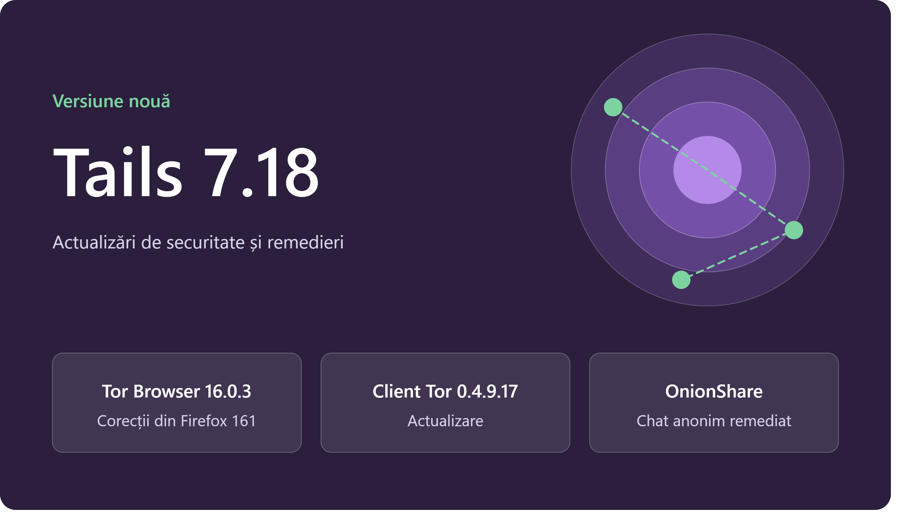

Tails 7.18 a fost lansat: Actualizări pentru Tor Browser 16.0.3 (cu corecții din Firefox 161), clientul Tor 0.4.9.17 și remedierea chat-ului anonim OnionShare

Tails, distribuția Linux bazată pe Debian concepută pentru confidențialitate și anonimat prin rutarea întregului trafic prin rețeaua Tor, a primit versiunea 7.18. Actualizarea menține la zi componentele critice de securitate, aduce corecții portate din Firefox 161 și rezolvă o problemă de funcționare a chat-ului anonim din OnionShare.
1. Actualizări ale nucleului de anonimat și securitate (Tor Browser și Tor)
Tor Browser 16.0.3: Integrează baza Firefox 153.8 ESR, completată cu corecții portate (backported fixes) din Firefox 161, alături de întărirea mecanismelor de protecție împotriva tehnicilor care ar putea compromite securitatea browserului.
Clientul Tor 0.4.9.17 și NoScript: Daemon-ul/clientul Tor a fost actualizat la versiunea 0.4.9.17, iar extensia NoScript a primit cea mai recentă actualizare de securitate.
2. Remediere OnionShare și opțiuni de actualizare / instalare
Chat anonim în OnionShare: Tails 7.18 rezolvă o eroare care împiedica funcționarea corectă a funcției de chat anonim din OnionShare (instrumentul utilizat pentru partajarea securizată a fișierelor, găzduirea site-urilor temporare și comunicarea prin servicii
.onion).Actualizare automată cu păstrarea Persistent Storage: Utilizatorii existenți care rulează orice versiune începând cu Tails 7.0 pot efectua upgrade-ul automat direct din sistem, păstrând intactă partiția criptată Persistent Storage (fișierele și setările salvate între sesiuni). În cazul în care actualizarea automată eșuează sau sistemul nu mai pornește ulterior, proiectul recomandă o actualizare manuală.
Imagini pentru instalări noi: Noii utilizatori pot descărca Tails 7.18 sub formă de imagine USB sau imagine ISO (pentru DVD-uri și mașini virtuale), cu mențiunea că o instalare curată pe un stick USB existent va șterge partiția Persistent Storage.